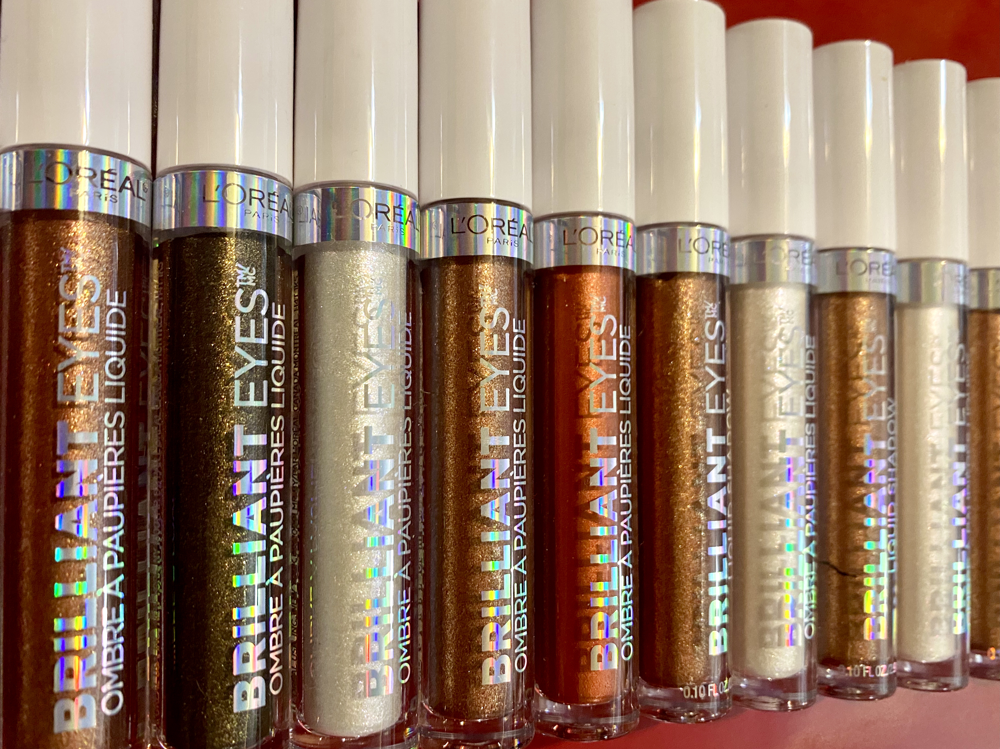
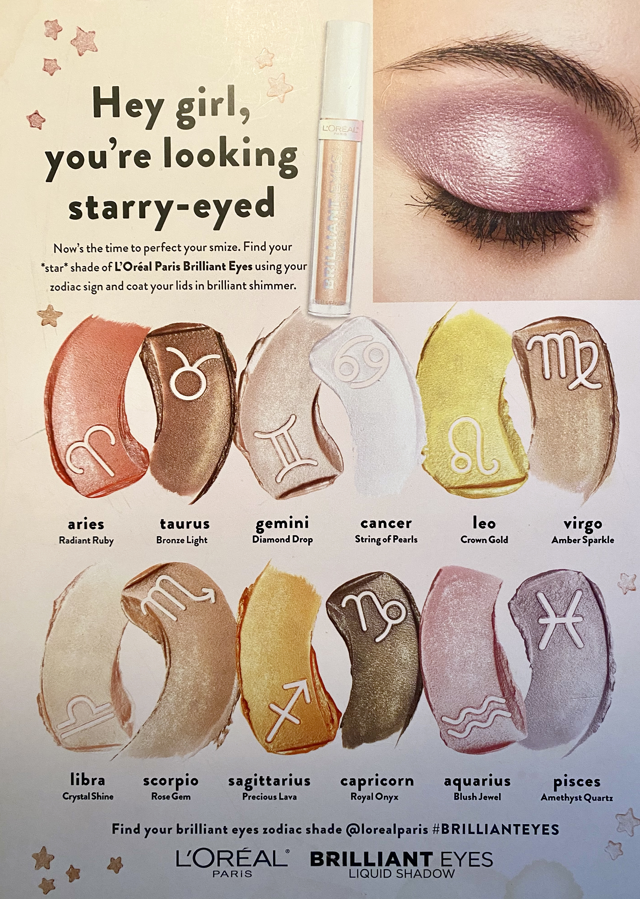
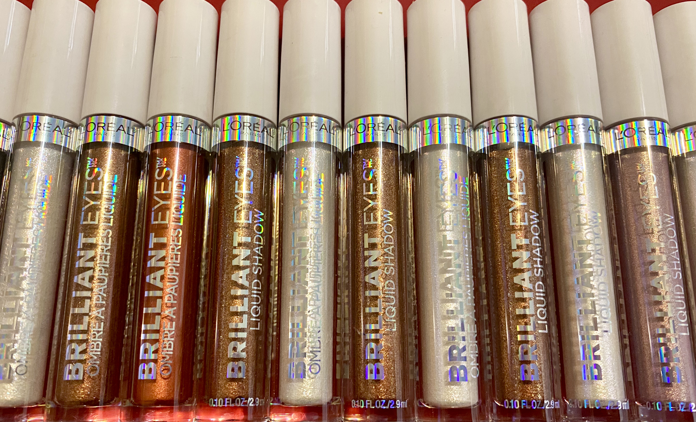
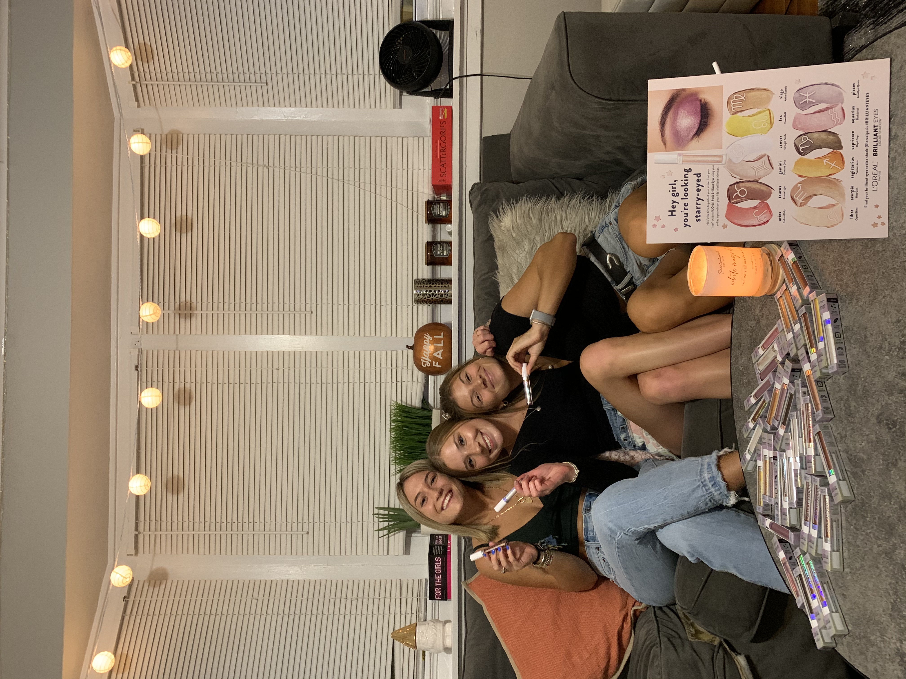
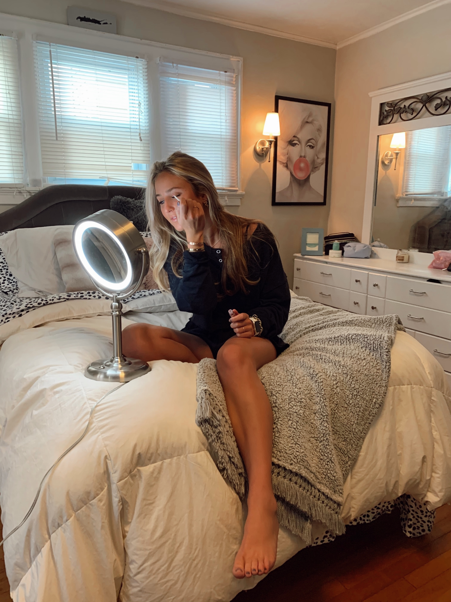
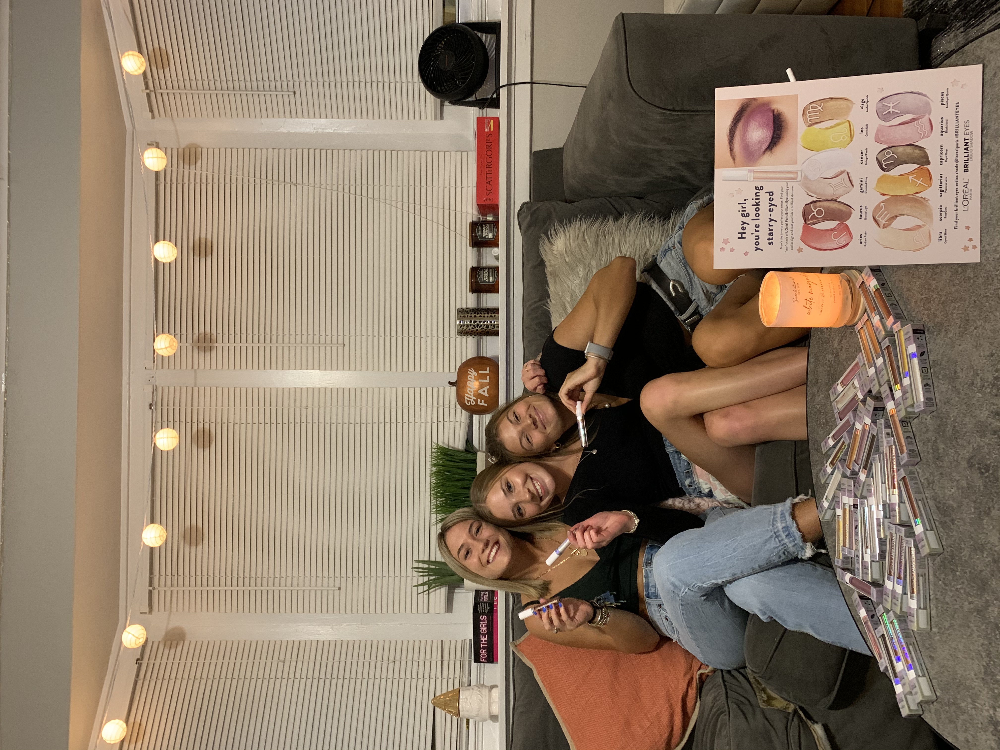
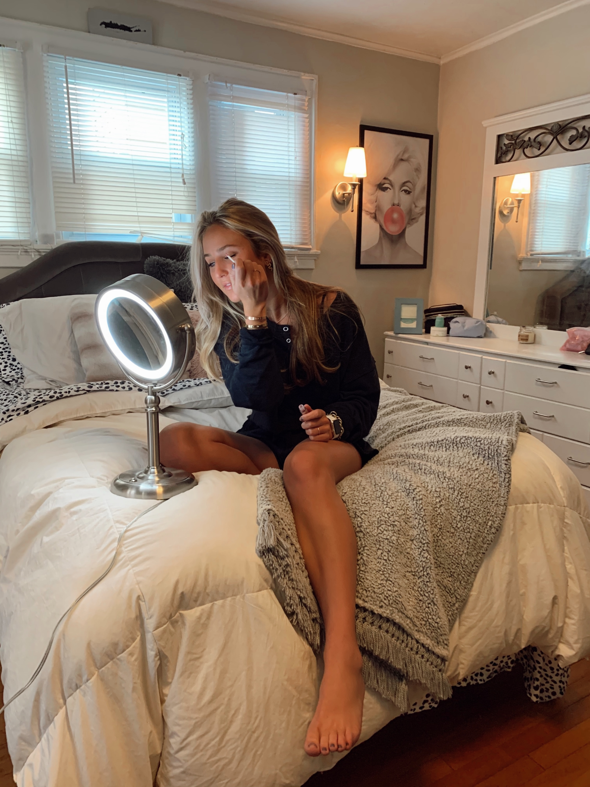

So, over summer I went out to California to visit one of my friends. My connection was actually his mother who reached out to me to do some work for her. She works for a company called WestOver Media and her clients are L'Oreal and Cosmopolitan Magazine. She works closely with their Marketing and Advertisement team for Womens Health and Beauty. So my job was to advertise and market L'Oreals Brilliant Eyes Liquid Eyeshadow line.
  I sustained a role as a brand ambassador/organic social media/content creator. With COVID-19 creating obstacles for many, I faced diversity and was able to obtain a remote work opportunity while completing my senior year at Syracuse University. I was granted the chance to work for L’Oréal and Cosmopolitan Magazine.
During this time, I worked to represent, advertise, and market women’s health, both face-to-face and via social media. I served as a liaison between customers and management roles, which allowed me to cultivate strong business relationships to drive business development. As challenging as it was to juggle multiple schedules, this opportunity presented itself and I jumped on it. As a result, I evolved into a stronger, more organized worker and person. My main area of focus was a Liquid Eye Shadow line called “Brilliant Eyes”.
I took it into my hands to gather members of the Omicron Chapter of Delta Delta Delta together to pose for photos in many different aspects whether that be using, receiving, or applying the eye shadow in a college light. I then took my photos and advertised them online across two different platforms (Instagram and Facebook). I also used my networking skills to reach out to those who don’t necessarily follow me on Instagram to follow up with more information about the products and why they are so great!
 


